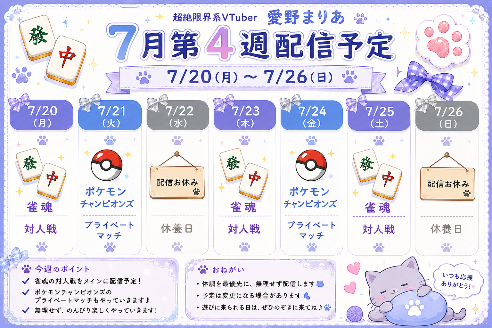

配信とコミュニティの現在地
最近の配信状況、リスナーの動き、コミュニティ全体の変化をまとめて確認できます。まずは上の数値を見て、気になる画面へ移動してください。
リスナーをすぐ検索
表示名から詳細へ移動リスナー区分別・攻略ガイド
人数だけでなく、次にどう接するかを表示します。カードを押すと該当リスナーへ移動します。
区分は参加率・初回参加日・最終参加日を基準にしています。人柄の評価ではなく、配信参加状況を整理するための目安です。
直近7配信・参加人数
直近7配信・コメント数
直近30配信・参加人数
直近30配信・コメント数
常連TOP10
コメント数だけでなく、参加配信数・最終参加日・参加率を見て、固定化や依存の偏りを確認します。
曜日別分析
👥 リスナー
企画タグの再分類・曜日再計算
既存の配信タイトルを再判定し、複合配信は複数タグとして集計します。配信日は曜日へ再変換します。
複数企画タグ集計
同じ配信が「友人戦」と「雑談」の両方に該当する場合、それぞれへ1配信として数えます。
配信一覧
コミュニティ健康度
月別アクティブリスナー
月別新規リスナー
コミュニティ所見
よく同じ配信に来る組み合わせ
週間プレビュー
入力内容を保存前でも確認できます。
保存済み予定との差分
現在の入力内容と、最後にJSON保存した内容を比較します。
今週の補足
予定画像や告知文に使う文章を入力できます。
X投稿文
現在の入力内容から投稿文を生成します。生成後の文章は自由に編集できます。
週間予定画像
現在の入力内容から、X投稿向けの週間予定画像を生成します。
画像生成AI用プロンプト
下の参考画像と生成したプロンプトを、画像生成AIへ一緒に渡してください。画像内には文字を描かせず、アプリ側で予定文字を重ねる前提です。

デザイン参考画像。構成・配色・可愛さの方向性だけを参照します。
モデレーション確認
自動検知は「要確認候補」です。最終判断は必ず人が行ってください。
設定
VTuber AnalyticsはAino Mariaが開発・公開しています。アプリ名とPowered by表記は固定です。運用に必要な項目だけ変更できます。
YouTubeアカウント連携・配信同期
Google Cloudで作成したウェブアプリ用OAuthクライアントを登録します。認証後は、接続したチャンネルのライブ配信情報を動画ID単位で同期します。
バックグラウンド処理
ブラウザを閉じても、Webアプリの黒い画面が起動している間は定期処理を続けます。PCやWebアプリを終了すると止まります。
YouTube配信情報同期
企画タグ・曜日再計算
自動バックアップ
YouTubeライブチャット取得
公開チャンネルの「ライブ」タブURLまたは再生リストURLから、ライブチャットJSONを取得します。
エラー詳細（0件）
処理ログを表示
ログはまだありません。
動作診断・エラー情報
DB、実行環境、保存先、YouTube取得状態、直近のWeb APIエラーをまとめて確認します。
診断情報のJSONを表示
全データのバックアップ・復元
DB、設定、モデレーションルール、週間予定、取得済みチャットJSONなどをZIPで保存します。
復元前には現在の全データを自動バックアップします。復元後はアプリを再起動してください。
保存・復旧・監査
バックアップが実際に復元できる状態かを検証し、操作履歴を確認します。
操作履歴
VTuber Analyticsについて
Analyze. Understand. Improve.
YouTubeライブチャットから、配信とコミュニティの変化を振り返るローカル分析ツールです。
VTuber Analytics
1.0.0
Aino Maria
MIT License
数字で人を評価するのではなく、変化を見つけ、次の配信を考えるための判断材料を増やします。